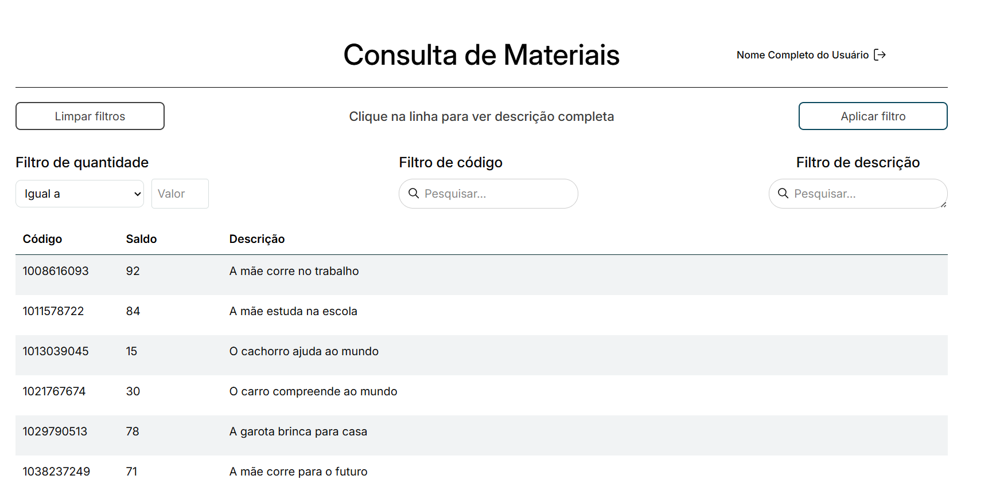

Solução moderna para substituir processos manuais de consulta de materiais, oferecendo busca inteligente por código, categoria ou status, integração com SICAM e relatórios de validade/desuso.

NELSON ABADIO SILVA
RONALDO MARTINS DA COSTA
Desenvolvido para eliminar erros na requisição de materiais devido a processos manuais e interfaces obsoletas do SICAM, este sistema centraliza consultas com códigos exatos, status de estoque e prazos de validade, reduzindo retrabalhos e desperdícios.
Mapeamento detalhado do SICAM e planilhas manuais, com identificação de gaps funcionais e requisitos para a nova solução.
Estruturação do banco de dados para suportar buscas avançadas, histórico de desuso e integração segura com fontes legadas.
Implementação em sprints dos módulos de: consulta básica, gestão de desuso, validade de perecíveis e painel de consumo.
Testes iterativos com servidores requisitantes e gestores de almoxarifado para garantir aderência às necessidades operacionais.
Busca por nome, código ou categoria com exibição clara do status (disponível/em desuso) e código exato para requisição no SICAM.
Alertas automáticos para materiais perecíveis próximos do vencimento, com relatórios para prevenção de desperdícios.
Registro centralizado de itens descontinuados, com datas de desativação e histórico de substituições.
Integração com Active Directory da Justiça Federal e controle de acesso por perfis (consulta/administração).
O sistema eliminou 100% das consultas manuais, reduzindo em 50% os erros de requisição. A arquitetura modular permite expansão futura para integração direta com pedidos no SICAM, e os relatórios de validade otimizaram o uso de recursos públicos.